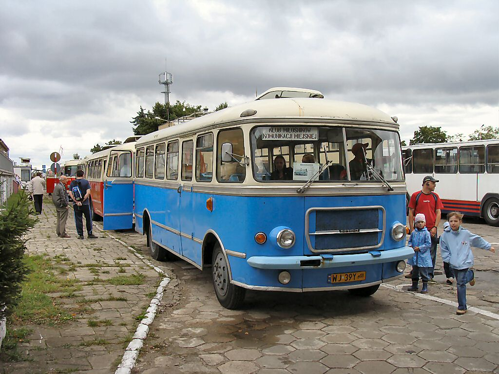

Menu
San_H100A.1
Jest to autobus międzymiastowy, zaprojektowany z myślą o PKS (podtyp A) lub dla przedsiębiorstw komunikacji miejskiej (podtyp B), zaprezentowany po raz pierwszy w roku 1966, wytwarzany seryjnie w latach 1967-1974 (wersja miejska produkowana była tylko do roku 1973) przez Sanocką Fabrykę Autobusów (SFA).
Był następcą modeli San H01, San H25 oraz San H27.
Łącznie wyprodukowano 23 770 sztuk Sanów H100, w tym 17 897 w wersji międzymiastowej (oznaczenie modelu: H100A) oraz 5873 sztuki w wersji miejskiej (oznaczenie: H100B).